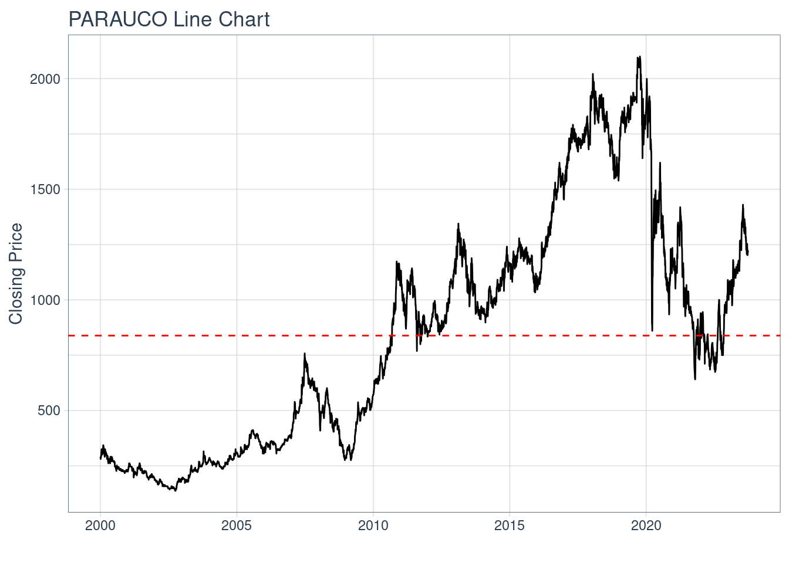
Proyecto Gestión Financiera
Descripción Activo y Contexto (Hito 1)
Fecha de entrega: Jueves 28 de Septiembre 23:59.
Definición
La temática a estudiar corresponde al sector inmobiliario. Este sector comprende la oferta y demanda de bienes inmuebles (casas, departamentos, terrenos, etc.), que pueden tener diversos usos, como el uso residencial, comercial, industrial, etc. Aun así, este sector también comprende temas de inversión, financiamiento, urbanización, e incluso temas sociales asociados.
En Chile, este sector es especialmente relevante. Dada la importante inmigración, expansión de los centros urbanos, entre otros factores, los sectores residenciales y comerciales han ganado importancia, con todos los beneficios y problemáticas que involucran. Por ejemplo, un estudio llamado “Real estate production, geographies of mobility and spatial contestation: A two case study in Santiago de Chile” , muestra que “mientras que la zona interior de Santiago, en proceso de reurbanización, a pesar de ser un espacio excluyente en el que no existen viviendas asequibles orientadas a las rentas más bajas, no es un espacio disputado en términos de acceso a los medios de movilidad, la periferia en expansión de la ciudad muestra fuertes diferencias de clase entre los nuevos y los antiguos habitantes.” Esto muestra la relevancia del sector inmobiliario para el país, pues tiene influencia tanto en temas económicos como sociales.
En el último tiempo, sin embargo, la industria inmobiliaria ha sufrido importantes dificultades en Chile. La actividad del sector inmobiliario ha ido a la baja, han disminuido los ocupados en el sector, han aumentado los costos de los materiales, etc. Por ejemplo, se puede ver la caída de la actividad del sector en el siguiente gráfico:

Todo esto según información del Banco Central y la Cámara Chilena de la Construcción que se analizará con mayor profundidad en la sección de Contexto.
Dentro de este sector, se ha definido como activo a estudiar a Parque Arauco S.A (PARAUCO). Parque Arauco está centrada principalmente en la edificación y administración de centros comerciales. Fue fundada el año 1979, y actualmente tiene operaciones en Chile, Perú y Colombia. La empresa tiene cuatro formatos de centros comerciales: regionales, de barrio, outlets y strip centers, donde operan grandes tiendas (por ejemplo, Fallabella), restaurantes, supermercados, cines, etc.
A continuación, se puede ver el movimiento del precio de su acción en el mercado de valores. El activo PARAUCO tiene un valor promedio para el intervalo igual a 839 , donde se puede apreciar una fuerte caída durante los años de pandemia y una aparente recuperación en el último tiempo.
PARAUCO %>%
ggplot(aes(x = date, y = close)) +
geom_candlestick(aes(open = open, high = high, low = low, close = close)) +
labs(title = "PARAUCO Candlestick Chart", y = "Closing Price", x = "") +
theme_tq()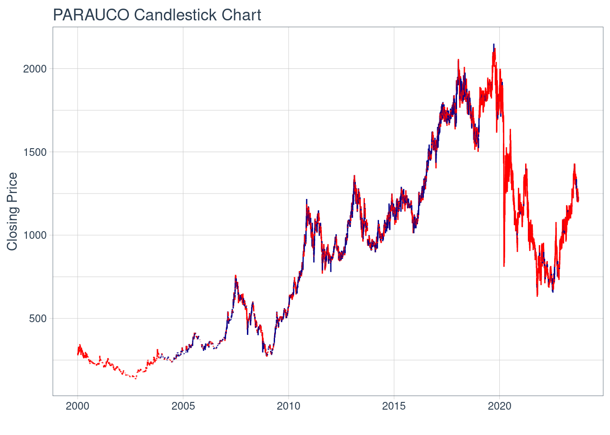
Motivación
Estudiar el activo Parque Arauco (PARAUCO) se vuelve relevante dado el fuerte movimiento que ha vivido la empresa en el último tiempo, a pesar del difícil momento de la industria (en Chile, al menos). La compañía ha estado viviendo una importante expansión, donde desembolsó USD$ 17 millones para adquirir una posición controladora de un fondo de inversión inmobiliario en Medellín, el pasado 6 de septiembre de 2023. “Con esta inversión, damos un paso más en nuestra estrategia de incorporar a nuestro portafolio centros comerciales multipropietarios icónicos y de alta calidad, que cuentan con ubicaciones privilegiadas y excelentes perspectivas de crecimiento futuro”, señaló Eduardo Pérez Marchant, director general de la compañía.
También, durante agosto de este año, se anunció una inversión de USD$ 34 millones por el 51% de Titán Plaza, uno de los centros comerciales más emblemáticos de Bogotá. Esta inversión comprende aproximadamente 19.000 m2 de área comercial, que “en los últimos doce meses, hasta junio de 2023, esta área aportó un EBITDA de COP$ 23.000 millones (aproximadamente USD$ 5,6 millones)”. Durante el mismo mes, también anunció una inversión de USD$ 33 millones para ampliar su principal activo en Perú, Megaplaza Independencia.
Por último, en temas nacionales, Parque Arauco emitió con éxito un bono en el mercado local chileno, por un total de UF 3.000.000 (aproximadamente USD$130 millones), mediante Link Capital Partners y BCI. La demanda total alcanzó 1,5 veces la oferta. La compañía, con una calificación de riesgo AA, realizó esta inversión para fortalecer la liquidez y estabilizar sus amortizaciones a futuro.
Con todo este movimiento en el último tiempo, se vuelve interesante estudiar el activo PARAUCO, pues todas estas inversiones, anuncios, etc. parecieran indicar un buen momento de la empresa, a pesar del mal momento de la industria nacional, y por lo tanto relevante de estudiar.
Contexto
En primer lugar, es importante analizar los movimientos que ha tenido PARAUCO en el mercado en el último tiempo, por lo que se vuelve a mostrar el gráfico de la acción para entrar en mayor profundidad.
Se puede ver que la acción ha tenido bajas importantes principalmente durante la Crisis Subprime en el año 2007-2008, y también durante la crisis del Covid-19. Antes de este último suceso, la empresa había tenido su mayor valuación en bolsa, con un precio de acción superior a los CLP$ 2.000. Después de eso, cayó por debajo de los CLP$ 750, dado el freno de la actividad del sector inmobiliario durante la pandemia y las consecuencias económicas posteriores que ésta trajo. Luego de esto, la acción de la empresa Parque Arauco ha recuperado valor, llegando a los CLP$ 1.225 que vale hoy en día.
Ahora bien, como se señaló anteriormente, es importante considerar algunas variables económicas que permiten dar contexto al sector y al activo. En ese sentido, la Cámara Chilena de la Construcción provee algunos indicadores para el rubro inmobiliario en Chile.
La primera variable importante a considerar es el Índice de Precios de Materiales e Insumos de Construcción (IPMIC). Este indicador permite ver cómo han aumentado los precios con respecto a un año base (2014 en este caso), y tiene una influencia directa en el rendimiento de las empresas del sector inmobiliario. A continuación, se puede ver un gráfico de este indicador desde el 2017:
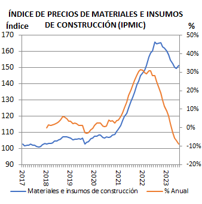
Se puede ver una clara relación de que, cuando los precios han subido, la acción PARAUCO ha bajado. Incluso, durante los últimos meses del año la acción ha experimentado una leve caída, coincidiendo justamente con un aumento de los precios de los materiales. Se puede ver entonces que hay una relación bastante directa entre el IPMIC y la valoración del activo y sector.
Otra variable importante para el sector inmobiliario son las tasas de interés. Esta variable tiene una incidencia directa en el desempeño del sector, tanto para la capacidad de endeudamiento de las empresas para llevar a cabo sus proyectos (oferta), como para la capacidad de deuda de las personas, empresas o sociedades que desean adquirir los inmuebles (demanda). A continuación, se muestra un gráfico que representa el movimiento de las tasas de interés en el último tiempo:
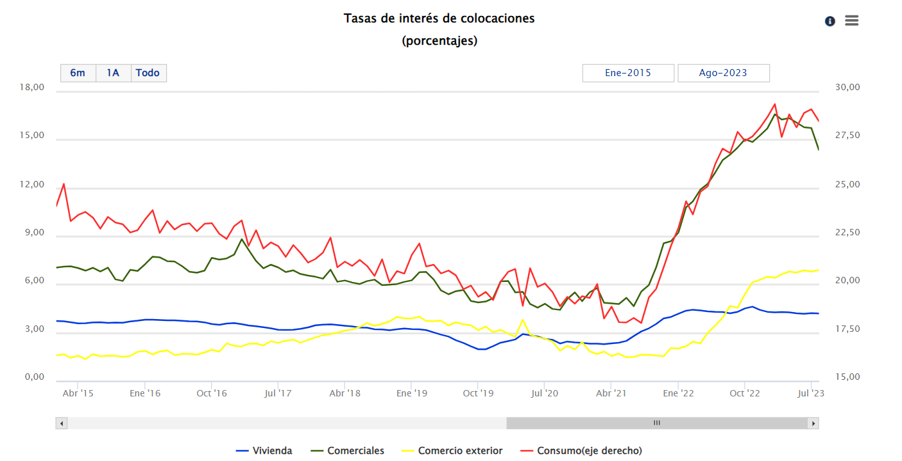
Se puede ver nuevamente que las tasas iban a la baja, pero que en el último tiempo han aumentado. Esto ha colaborado a que se frene el sector en el país.
Por último, otra variable importante corresponde al Índice Mensual de Actividad de la Construcción (IMACON), que indica el comportamiento de la actividad con respecto a un año base (2014 en este caso) y contempla variables como el empleo del sector, la venta de materiales, los permisos de edificación, entre otros. Este es un indicador que refleja claramente la situación de la industria, como se puede ver en el siguiente gráfico:
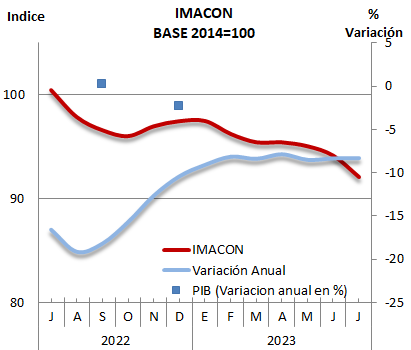
Se puede ver una clara tendencia a la baja en el sector inmobiliario del país, que coincide con el aumento de los precios y las tasas de interés ya mencionadas. Este es un indicador muy importante dado las variables que contempla.
Análisis de Largo Plazo
Caracterización deuda (Aplicación cap. 15)
Para caracterizar la deuda, se hizo un estudio de los Estados Financieros de Parque Arauco a la fecha del 30 de junio de 2023. Es importante señalar que la unidad a utilizar será de M$ (cifra expresada en miles de pesos chilenos).
En primer lugar, se pudo ver que la compañía tiene activos por M$3.095.617.496, pasivos por M$1.705.078.430 y patrimonio por M$1.390.539.066.
Con respecto a los activos, fue relevante ver que la compañía tiene M$1.402.554 invertidos en Fondos Mutuos, mientras que tiene M$23.494.012 en instrumentos de cobertura y M$37.095 en Forward de moneda. Estos dos últimos instrumentos se revisarán en el ítem de activos derivados.
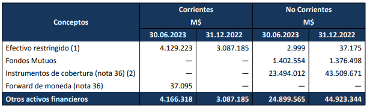
Luego, con respecto a los pasivos, fue relevante observar que la compañía tiene pasivos (por emisión de bonos) corrientes por M$19.844.398 y no corrientes por M$908.661.815. Esta cantidad contempla la última emisión mencionada anteriormente, donde se recaudaron M$107.561.533, donde se contempla el pago de intereses semestrales a una tasa de 3,2% anual compuesta, y con un pago total de capital. Esta emisión fue en marzo de este año.
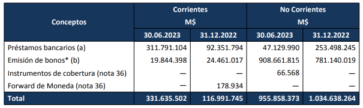
Por último, con respecto al patrimonio, PARAUCO corresponde a la única serie de acciones de la empresa. Actualmente hay 905.715.882 acciones en circulación, con un precio de mercado de CLP$1.225 a la fecha. También, el dividendo a pagar se estableció en CLP$25 por acción.
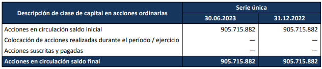
Las utilidades por acción también se pueden ver en la siguiente tabla:
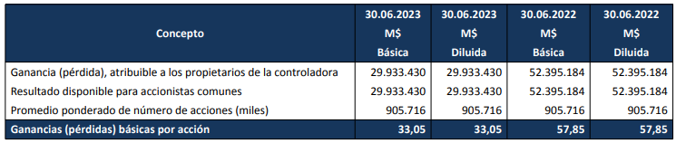
Caracterización de emisiones históricas (Aplicación cap. 20)
Parque Arauco ha emitido acciones en varias ocasiones. A continuación, se puede ver una tabla que muestra las emisiones realizadas por la compañía, según información entregada por la CMF:
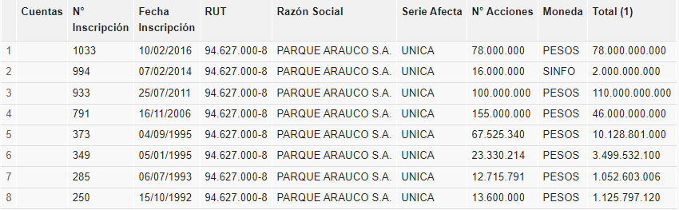
Para describir el proceso, se hará un análisis particular de la última emisión realizada el año 2016, según información encontrada en los prospectos de emisión de acciones en la CMF.
En aquella ocasión, el monto máximo a recaudar correspondía a CLP$78.000.000.000, emitiendo 78.000.000 de acciones. De estas, 7.800.000 serían destinadas a planes de compensación para ejecutivos de Parque Arauco, que deberán ser suscritas y pagadas en un plazo máximo de 5 años. Las restantes 70.200.000 deberán ser suscritas y pagadas dentro de 3 años máximo. Todo esto correspondía a la confección del contrato de suscripción.
Luego, se elaboró la declaración de registro, que corresponde al informe de donde se obtiene esta información. Ahí se señala toda la información financiera y administrativa pertinente, y se menciona que los fondos serían utilizados para el financiamiento de parte de los proyectos que se estaban desarrollando en la empresa tanto en Chile, Perú y Colombia.
Luego, se fijó el precio de la colocación, en este caso a CLP$1.000. La colocación se haría por intermediarios, siendo estos Banchile e Itaú. En este caso, se señala que el procedimiento sería ofrecer de forma preferente y por 30 días a los accionistas inscritos. Luego de esto, se pasaría a la oferta pública y venta, y finalmente el mercado se estabiliza.
Relación con activos derivados
Con respecto a los activos derivados, Parque Arauco se ha preocupado de contratar coberturas para disminuir riesgos de tipo de cambio y tasas de interés. En la tabla a continuación, se puede ver que el principal derivado financiero que ha contratado la empresa son Swaps, con el fin de cubrirse del tipo de cambio y la tasa de interés. Sin embargo, también han contratado Forwards, para cubrirse del tipo de cambio.
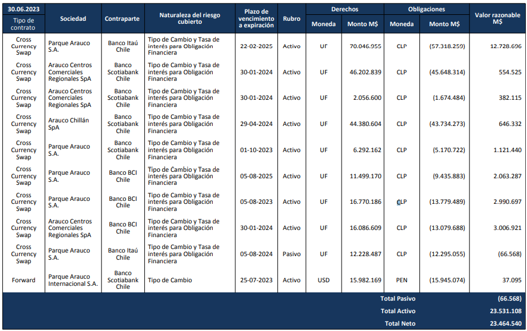
Estos derivados son importantes para la operación de la empresa. Ya se mencionó la importancia de la tasa de interés para el sector, y también el tipo de cambio dada su operación internacional.
Reporte grupal
Para la determinación de los pesos del portafolio compuesto por las acciones del grupo, se buscó calcular el portafolio tangencial. Entonces, con los retornos esperados \(\mu\) y la matriz de covarianza de los activos que componen el portafolio \(\Sigma\), se calcularon los pesos \(w\) de cada activo. El problema de optimización a maximizar fue el siguiente:
\[ \underset{w}{max} \{\mu - \delta w^T\Sigma w\} \]
Sujeto a:
\[ \underset{i}{\sum}w_i = 1 \]
\[ 0 \leq w_i \leq 1 \]
Si bien no se está maximizando el ratio de \(Sharpe\) necesariamente, se penaliza la función objetivo con un grado \(\delta\) a la función objetivo por la varianza del portafolio. Luego, de acuerdo al factor de penalización se puede definir un portafolio con mayor o menor grado de aversión al riesgo, pues mientras mayor sea el factor, más se penalizará la función objetivo en función del riesgo y viceversa.
En este caso, se decidió tomar un perfil de inversión conservador, dada la recesión que vive la economía chilena en la actualidad. También, se decidió que la información a utilizar para calcular los retornos y sus varianzas sería a partir del 2021, con el fin de considerar los últimos efectos de la pandemia y no la pandemia en su totalidad, por ser un evento muy aislado que altera los resultados. También, se consideró este horizonte de información por ser una inversión a corto plazo, y por lo tanto es mejor considerar las situaciones más recientes de los activos que toda la información histórica, pues la información reciente es más representativa.
Con todo esto, fue posible obtener la información de los retornos, definir el grado del factor de penalización y maximizar los retornos en función del riesgo asumido. Así, los resultados de los pesos de cada activo en el portafolio fueron los siguientes:
| Acción | Pesos |
|---|---|
| Banco de Chile | 68,3% |
| Parque Arauco | 10,3% |
| COPEC | 21,4% |
Cuyo rendimiento esperado es de 1,113%.
Aplicación Black-Scholes
A continuación, se realizará la valorización de una opción de compra “call” utilizando el modelo de Black-Scholes. Dado que no se encontró información sobre las opciones de Parque Arauco, se decidió aplicar el modelo para una opción de la empresa Simon Property Group (SPG), compañía estadounidense dedicada al Real Estate Comercial y, por lo tanto, bastante similar a Parque Arauco.
El modelo Black-Scholes, según se señala en el artículo “On analytical solution of the Black-Scholes equation by the first integral method”, “se utiliza como modelo para valorar opciones de compra y venta europeas o estadounidenses sobre acciones que no pagan dividendos. En la teoría de la valoración de opciones, la ecuación de Black-Scholes es uno de los modelos más eficaces para valorar las opciones.” En ese sentido, este modelo promete una buena valuación del activo en cuestión.
La formulación continua de Black-Scholes es la siguiente:
\[ C(S,t)=S\cdot \Phi(d_1) - K exp(-R\cdot t) \cdot \Phi(d_2) \]
\[ d_1= \frac{\log\frac{S}{K}+(R+\frac{\sigma^2}{2})\cdot t}{\sqrt{\sigma^2\cdot t}} \]
\[ d_2= d_1-\sqrt{\sigma^2\cdot t} \]
Donde \(S\) corresponde al precio de la acción, \(K\) al precio del ejercicio, \(R\) a la tasa libre de riesgo, \(\sigma^2\) a la variación del rendimiento de la acción y \(t\) al tiempo para el vencimiento.
El código a continuación permite calcular el valor de la opción con el Modelo Black-Scholes, conectándose a Yahoo Finance para obtener toda la información necesaria. En este caso, la opción “call” a valorar corresponde a la “SPG231215C00055000”, con vencimiento para el 15 de diciembre.
import yfinance as yf
from datetime import datetime as dt
from scipy.stats import norm
import datetime
import numpy as np
def black_scholes(S, K, T, r, sigma, option_type='call'):
d1 = (np.log(S / K) + (r + (sigma**2) / 2) * T) / (sigma * np.sqrt(T))
d2 = d1 - sigma * np.sqrt(T)
if option_type == 'call':
option_price = S * norm.cdf(d1) - K * np.exp(-r * T) * norm.cdf(d2)
else:
option_price = K * np.exp(-r * T) * norm.cdf(-d2) - S * norm.cdf(-d1)
return option_price
# Símbolo del activo
symbol = "SPG"
# Descargar datos de Yahoo Finance
asset_data = yf.Ticker(symbol)
precio_accion = asset_data.history(period='1d')['Close'][0]
data = yf.download(symbol, start='2023-01-01', end=datetime.date.today().strftime("%Y-%m-%d"))
[*********************100%%**********************] 1 of 1 completed# Calcular los rendimientos diarios
data["Daily_Returns"] = data["Adj Close"].pct_change()
# Calcular la volatilidad histórica
volatilidad = data["Daily_Returns"].std()
opcion = yf.Ticker("SPG231215C00055000")
precio_strike=opcion.info["strikePrice"]
fecha = dt.utcfromtimestamp(opcion.info["expireDate"])
tiempo_para_vencimiento = (np.datetime64(fecha) - np.datetime64('today')) / np.timedelta64(1, 'D')
treasury_data = yf.Ticker("^TNX")
# Obtener el historial de precios
treasury_history = treasury_data.history(period="1d")
# Obtener la tasa de rendimiento (yield)
tasa_libre_de_riesgo= treasury_history['Close'][0]/100
option_type = 'call'
option_price = black_scholes(precio_accion, precio_strike, tiempo_para_vencimiento / 365, tasa_libre_de_riesgo, volatilidad, option_type)
print(f"Precio de la opción {option_type}: ${option_price:.2f}") Precio de la opción call: $50.35Modelo Adicional de valorizacion
El modelo adicional de valorización propuesto corresponde al Modelo Binomial o Modelo de Árbol Binomial. Este es un modelo en tiempo discreto, donde se puede diagramar un árbol que representa los distintos caminos que puede seguir el precio de la opción, asumiendo que sigue un camino aleatorio. Según un artículo publicado por Gastón Milanesi, “Valuación de Opciones Reales: Análisis comparativo entre el Modelo Binomial y su Versión Borrosa”, “las principales variables que afectan el valor de la opción en el tradicional modelo binomial (Cox, Ross y Rubinstein, 1979) están dadas por los factores de ascenso y descenso (u; d) que definen el recorrido del activo subyacente. Los coeficientes son calculados a partir de la volatilidad (\(\sigma\)) del precio correspondiente a una cartera de activos financieros gemelos o réplica de los flujos de fondos del subyacente”. Es importante señalar que este modelo se basa en la “valuación neutral al riesgo”, donde se asume que los inversionistas son neutrales al riesgo, que significa que los inversionistas no aumentan el retorno esperado requerido de una inversión para compensar el aumento del riesgo. Todo esto según el libro “Options, Futures and Other Derivatives” de John C. Hull.
Para este modelo, se necesitan conocer los mismos parámetros que para el modelo Black-Scholes. \(S\) corresponde al precio de la acción, \(K\) al precio del ejercicio, \(R\) a la tasa libre de riesgo, \(\sigma^2\) a la variación del rendimiento de la acción y \(t\) al tiempo para el vencimiento. Adicionalmente, se debe definir el número de pasos o nodos que tendrá el árbol, que en este caso se denotará como \(n\). Así, el paso a paso para obtener el resultado es el siguiente:
Calcular el largo del paso del tiempo, que se define como \(\Delta t=\frac{t}{n}\).
Obtener el factor de descuento, correspondiente a \(e^{-r\cdot \Delta t}\) .
Calcular los factores de ascenso y descenso, \(u=e^{\sigma \cdot \sqrt{\Delta t}}\) y \(d=\frac{1}{u}\).
Calcular la probabilidad neutral al riesgo: \(q=\frac{e^{r\cdot \Delta t}-d}{u-d}\). Esta representa la probabilidad de que haya un movimiento alcista en un mundo de “riesgo neutral”, como se supone en este caso. \(1-q\) representa la probabilidad de un movimiento bajista.
Construir el árbol binomial, donde en cada nodo del árbol se calcula el valor de la opción en función de los nodos que siguen después.
Valorar la opción en el nodo inicial, obteniendo el precio de la opción.
Aplicación modelo adicional
El código a continuación permite calcular el valor de la opción con el Modelo de Árbol Binomial, conectándose a Yahoo Finance para obtener toda la información necesaria. En este caso, la opción “call” a valorar corresponde a la “SPG231215C00055000”, con vencimiento para el 15 de diciembre.
import yfinance as yf
from datetime import datetime as dt
from scipy.stats import norm
import datetime
import numpy as np
# Función para valorar una opción utilizando el modelo de árbol binomial
def binomial_option_pricing(S, K, T, r, sigma, option_type='call', n=1000):
# Calcula el paso de tiempo y el factor de descuento
dt = T / n
discount_factor = np.exp(-r * dt)
# Calcula los valores de movimiento hacia arriba y hacia abajo
u = np.exp(sigma * np.sqrt(dt))
d = 1 / u
# Calcula las probabilidades neutrales al riesgo
q = (np.exp(r * dt) - d) / (u - d)
# Inicializa una matriz para almacenar los valores de la opción en cada nodo del árbol
option_values = np.zeros((n + 1, n + 1))
# Llena la matriz de valores de opción en función del modelo de árbol binomial
for j in range(n + 1):
if option_type == 'call':
option_values[n, j] = max(0, S * (u**j) * (d**(n - j)) - K)
else:
option_values[n, j] = max(0, K - S * (u**j) * (d**(n - j)))
for i in range(n - 1, -1, -1):
for j in range(i + 1):
if option_type == 'call':
option_values[i, j] = max(0, (q * option_values[i + 1, j] + (1 - q) * option_values[i + 1, j + 1]) * discount_factor)
else:
option_values[i, j] = max(0, (q * option_values[i + 1, j] + (1 - q) * option_values[i + 1, j + 1]) * discount_factor)
return option_values[0, 0]
# Símbolo del activo
symbol = "SPG"
# Descargar datos de Yahoo Finance
asset_data = yf.Ticker(symbol)
precio_accion = asset_data.history(period='1d')['Close'][0]
data = yf.download(symbol, start='2023-01-01', end=datetime.date.today().strftime("%Y-%m-%d"))
[*********************100%%**********************] 1 of 1 completed# Calcular los rendimientos diarios
data["Daily_Returns"] = data["Adj Close"].pct_change()
# Calcular la volatilidad histórica
volatilidad = data["Daily_Returns"].std()
opcion = yf.Ticker("SPG231215C00055000")
precio_strike=opcion.info["strikePrice"]
fecha = dt.utcfromtimestamp(opcion.info["expireDate"])
tiempo_para_vencimiento = (np.datetime64(fecha) - np.datetime64('today')) / np.timedelta64(1, 'D')
treasury_data = yf.Ticker("^TNX")
# Obtener el historial de precios
treasury_history = treasury_data.history(period="1d")
# Obtener la tasa de rendimiento (yield)
tasa_libre_de_riesgo= treasury_history['Close'][0]/100
option_type = 'call'
# Valorar la opción utilizando el modelo de árbol binomial
option_price_bin = binomial_option_pricing(precio_accion, precio_strike, tiempo_para_vencimiento / 365, tasa_libre_de_riesgo, volatilidad, option_type, n=1000)
print(f"Precio de la opción {option_type}: ${option_price_bin:.2f}")Precio de la opción call: $48.94Análisis de contraste de ambos modelos
Se puede ver que el resultado obtenido al aplica el Modelo Black-Scholes fue de USD $50.35, mientras que para el Modelo de Árbol Binomial el resultado fue de USD $48.94. Esta diferencia se puede deber a varias razones.
En primer lugar, el Modelo Black-Scholes es un modelo continuo, mientras que el Modelo de Árbol Binomial es un modelo discreto. Esto incide directamente en los cálculos para la valoración, y por lo tanto efectos directos en los resultados. También, es importante señalar que el Modelo de Árbol Binomial puede manejar la volatilidad en cada paso, mientras que el Modelo de Black-Scholes la asume como constante a lo largo del tiempo. Esto puede llevar a resultados erróneos, pues la volatilidad cambia en el tiempo.
Otro punto a considerar son los supuestos de los modelos. Ambos asumen la neutralidad al riesgo y una completitud y eficiencia de los mercados, lo que en la práctica no se cumple al 100%. Esto también puede llevar a obtener valuaciones incorrectas.
Reporte Grupal: Caso Administración
Se eligen uno de los siguientes casos con tal de replicar y responder sus preguntas de acuerdo al activo principal elegido:
Caso Administración de Capital de Trabajo de Keafer Manufacturing de la página 822 del ROSS.
Caso Administración de Efectivo de Richmond Corporation de la página 845 del ROSS.
Caso Administración de Efectivo de Braam Industries de la página 874 del ROSS.